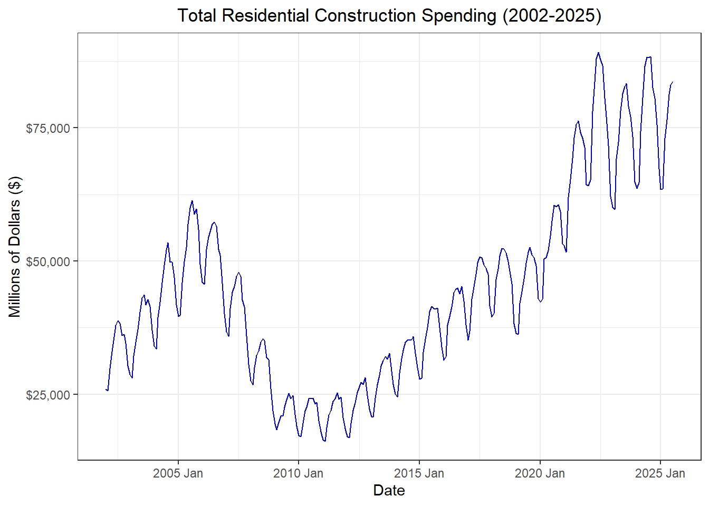
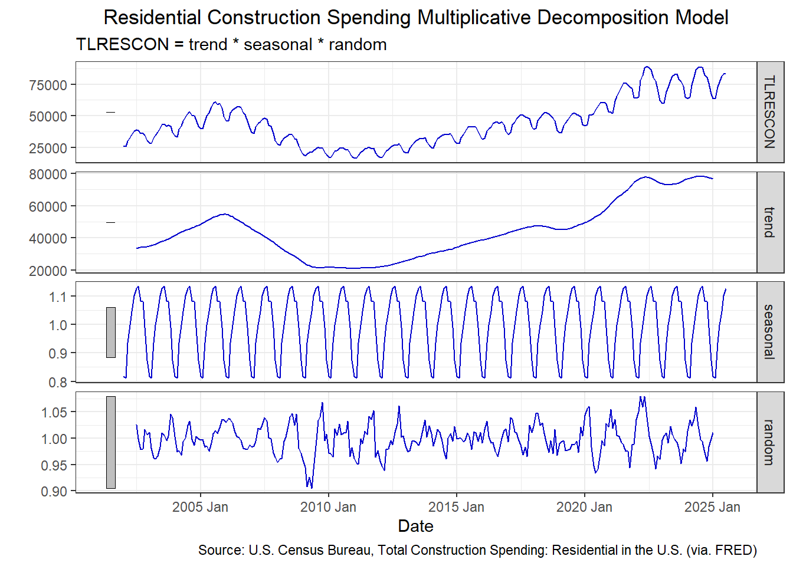
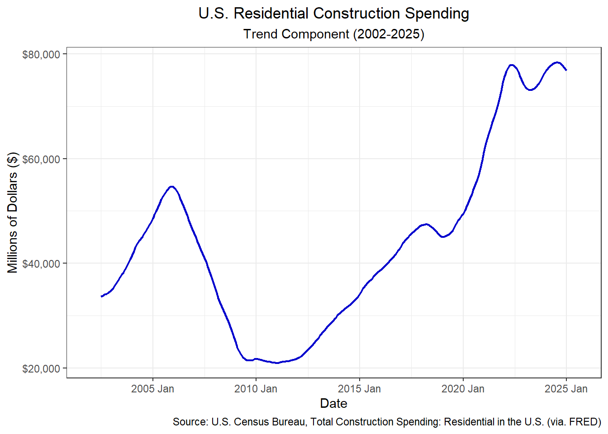
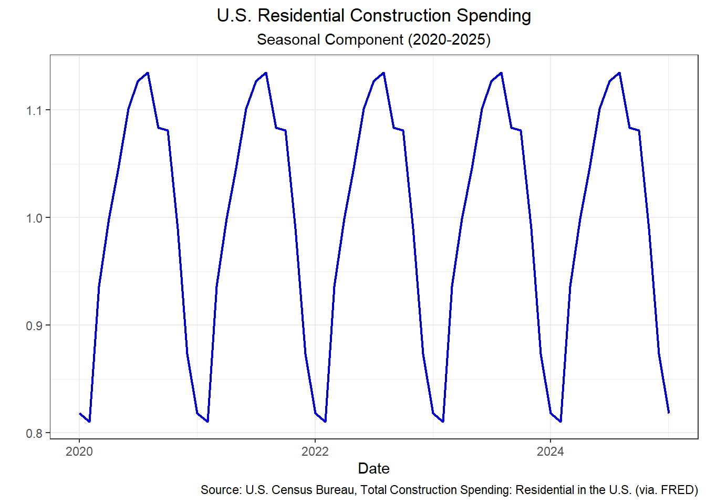
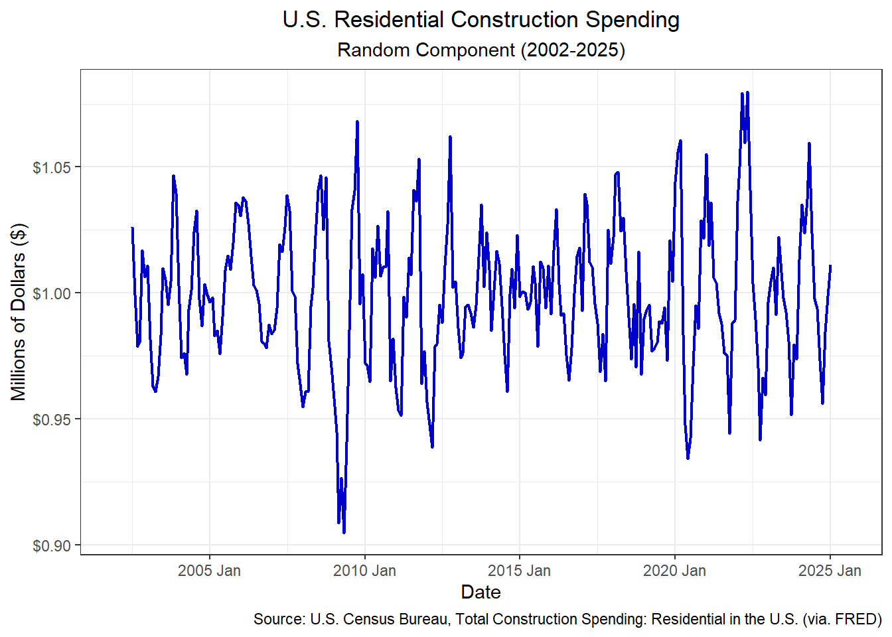

Decomposition Project
Decomposition Project
What is a decomposition model?
A decomposition model separates time series data into three components: the trend, seasonality, and random (irregular) components. This separation helps distinguish long-term movements from recurring seasonal patterns and random fluctuations caused by market changes, such as supply chain disruptions during COVID-19.
There are two main types of decomposition models: additive and multiplicative. A multiplicative model is most appropriate when the magnitude of seasonal variations increases with the overall trend, as observed in this data set. In contrast, an additive model is better suited when the seasonal component remains relatively constant, regardless of changes in the trend.
Data
The Total Residential Construction Spending (TLRESCON) data set from the Federal Reserve Economic Data (FRED) tracks total residential construction spending in the United States. The data is derived from the Value of Construction Put in Place (VIP) survey, conducted monthly by the U.S. Census Bureau. Residential spending includes expenditures on new single-family and multi-family housing, such as new apartments and condominiums, as well as improvements like remodeling, additions, and major replacements.
Construction spending is a key economic indicator because it reflects both consumer and business confidence in the economy. Rising residential construction suggests strong demand for housing, higher household income, and positive expectations for future growth. Conversely, declines in construction activity can signal economic slowdowns, tighter credit conditions, or reduced investment in real assets.
Code
# Read in the CSV file
df <- read.csv("TLRESCON.csv")
# Convert the data frame to a time series tibble
df_ts <- df %>%
mutate(
date2 = ymd(observation_date),
month = month(date2),
year = year(date2),
ym = yearmonth(date2)
) %>%
select(ym, TLRESCON) %>%
tsibble(index = ym)
# Plot the data
ggplot(
df_ts,
aes(x = ym, y = TLRESCON)
) +
geom_line(color = "blue3") +
labs(
title = "Total Residential Construction Spending (2002-2025)",
x = "Date",
y = "Millions of Dollars ($)"
) +
scale_y_continuous(
labels = scales::label_dollar()
) +
theme_bw() +
theme(
plot.title = element_text(hjust = 0.5)
)
Decomposition Model
Code
# Run the multiplicative model
df_decomp <- df_ts %>%
model(feasts::classical_decomposition(TLRESCON, type = "mult")) %>%
components()
autoplot(df_decomp, color = "blue3") +
labs(
title = "Residential Construction Spending Multiplicative Decomposition Model",
x = "Date",
y = "",
caption = "Source: U.S. Census Bureau, Total Construction Spending: Residential in the U.S. (via. FRED)"
) +
theme_bw() +
theme(
plot.title = element_text(hjust = 0.5)
)
Trend Component
The trend component appears to be the main driver of the Total Residential Construction Spending data, as it shows the largest magnitude relative to the seasonal and random components. Historically, the trend aligns closely with major economic events. Spending peaked in 2006 before the 2008 financial crisis, followed by a sharp decline of roughly 50% for the next two years.
Prior to the COVID-19 outbreak in 2020, there was a modest dip in residential construction spending. However, spending surged to record highs shortly after, driven by a combination of supply chain disruptions, limited new housing supply, and historically low mortgage rates. These factors contributed to rapid home price appreciation, while increased time spent at home led to a rise in DIY renovation and improvement projects. Elevated construction costs since 2020 may also be partially explained by this heightened level of demand and investment in residential construction.
Code
# Plot the Trend
ggplot(
df_decomp,
aes(x = ym, y = trend)
) +
geom_line(color = "blue3", linewidth = .75) +
labs(
title = "U.S. Residential Construction Spending",
subtitle = "Trend Component (2002-2025)",
x = "Date",
y = "Millions of Dollars ($)",
caption = "Source: U.S. Census Bureau, Total Construction Spending: Residential in the U.S. (via. FRED)"
) +
scale_y_continuous(
labels = scales::label_dollar()
) +
theme_bw() +
theme(
plot.title = element_text(hjust = 0.5),
plot.subtitle = element_text(hjust = 0.5)
)
Seasonal Component
The seasonal component appears relatively small compared to the overall scale of the data. However, the table below indicates that activity peaks in July, gradually tapering off through the winter months before rising again in the spring and summer. This pattern aligns with typical construction cycles, as adverse weather conditions in winter often slow outdoor projects. Many construction firms complete framing and exterior work before winter and shift to interior projects during the colder months.
Code
# Plot the Seasonality Component
ggplot(
df_decomp,
aes(x = as.Date(ym), y = seasonal)
) +
geom_line(color = "blue3", linewidth = 0.75) +
labs(
title = "U.S. Residential Construction Spending",
subtitle = "Seasonal Component (2020-2025)",
x = "Date",
y = "",
caption = "Source: U.S. Census Bureau, Total Construction Spending: Residential in the U.S. (via. FRED)"
) +
scale_x_date(limits = as.Date(c("2020-01-01", "2025-01-01"))) +
theme_bw() +
theme(
plot.title = element_text(hjust = 0.5),
plot.subtitle = element_text(hjust = 0.5)
)
Code
| month | average |
|---|---|
| 1 | 36337.62 |
| 2 | 36274.79 |
| 3 | 42136.46 |
| 4 | 44839.88 |
| 5 | 47292.00 |
| 6 | 49602.21 |
| 7 | 50674.42 |
| 8 | 49594.52 |
| 9 | 47401.83 |
| 10 | 47144.87 |
| 11 | 43885.61 |
| 12 | 38814.26 |
Random Component
The random component remains relatively stable, fluctuating around the $1.00 level with noticeable variations in both directions. While the largest deviations coincide with major historical events, they are not substantially greater than other fluctuations observed throughout the period.
Code
# Plot the Random Component
ggplot(
df_decomp,
aes(x = ym, y = random)
) +
geom_line(color = "blue3", linewidth = 0.75) +
labs(
title = "U.S. Residential Construction Spending",
subtitle = "Random Component (2002-2025)",
x = "Date",
y = "Millions of Dollars ($)",
caption = "Source: U.S. Census Bureau, Total Construction Spending: Residential in the U.S. (via. FRED)"
) +
scale_y_continuous(
labels = scales::label_dollar()
) +
theme_bw() +
theme(
plot.title = element_text(hjust = 0.5),
plot.subtitle = element_text(hjust = 0.5)
)